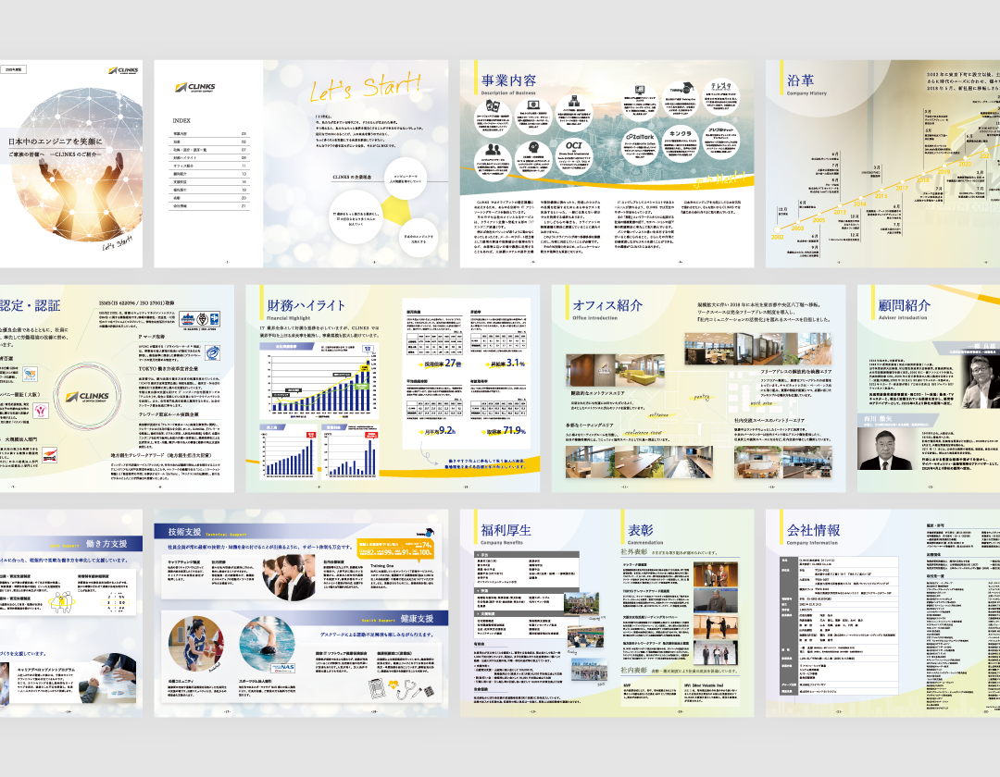

GRAPHIC
保護者向けパンフレット

プロジェクトの概要
新卒新入社員の保護者に向けた自社パンフレットのリニューアルおよび継続的な更新を担当。企業イメージや保護者に安心していただける情報掲載を目的として、パンフレット全体の再構成を行いました。掲載内容の見直しや構成設計、デザイン制作を行い、現在も毎年の更新対応を通じて継続的に改善・運用を行っています。
課題と解決策
既存のパンフレットは、掲載情報が少なく、どのような企業なのかが伝わりにくい状態でした。そのため、掲載情報を整理し、企業の特徴や働く社員にどのような利点があるのか伝わる構成へ再設計。視認性や可読性を考慮したレイアウト設計を行い、全体のトーンを統一しました。
成果
保護者向け資料として活用され、企業理解の促進と安心感の醸成に寄与し、保護者からも好評をいただきました。
担当領域
構成設計／情報整理／コピーライティング／社内調整／レイアウト設計／デザイン／入稿データ作成
使用したツール
